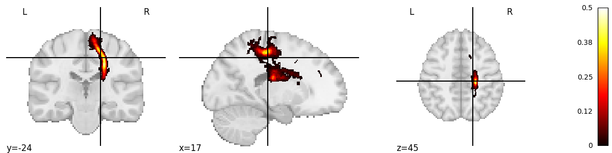
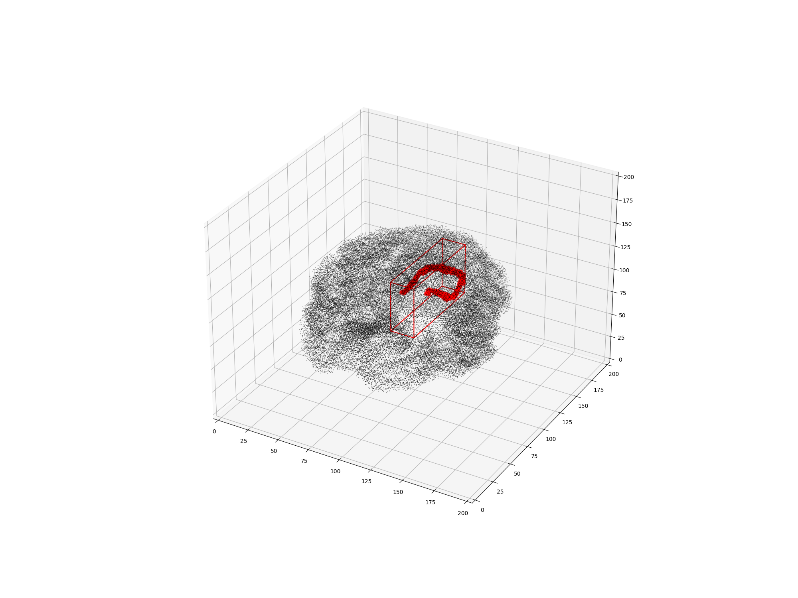
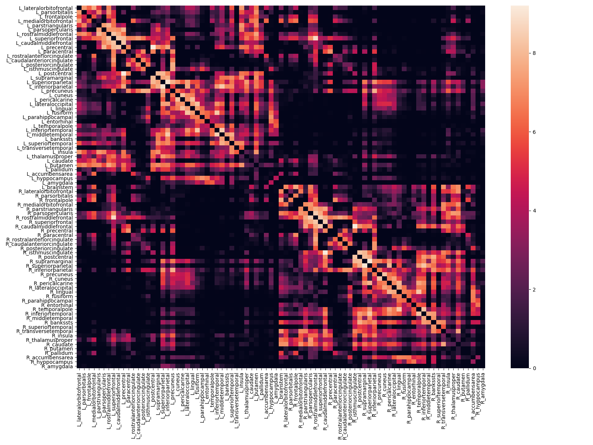

Note
Click here to download the full example code
Exploring the ConWhAt Atlases¶
# There are four different atlas types in ConWhat, corresponding to the 2 ontology types (Tract-based / Connectivity-Based) and 2 representation types (Volumetric / Streamlinetric).
#
# (More on this schema [here](http://conwhat.readthedocs.io/en/latest/about_conwhat/ontology_and_representation.html))
Setup¶
# ConWhAt stuff
from conwhat import VolConnAtlas,StreamConnAtlas,VolTractAtlas,StreamTractAtlas
from conwhat.viz.volume import plot_vol_scatter,plot_vol_and_rois_nilearn
# Neuroimaging stuff
import nibabel as nib
from nilearn.plotting import plot_stat_map,plot_surf_roi
from nilearn.datasets import fetch_surf_fsaverage
from nilearn.surface import load_surf_mesh
# Viz stuff
from matplotlib import pyplot as plt
import seaborn as sns
# Generic stuff
import glob, numpy as np, pandas as pd, networkx as nx
# supress warnings for docs build
import warnings
Load and explore¶
# We'll start with the scale 33 lausanne 2008 volumetric connectivity-based atlas.
# Define the atlas name and top-level directory location
atlas_dir = 'conwhat_atlases'
atlas_name = 'CWL2k8Sc33Vol3d100s_v01'
# Initialize the atlas class
vca = VolConnAtlas(atlas_dir=atlas_dir + '/' + atlas_name,
atlas_name=atlas_name)
# This atlas object contains various pieces of general information
vca.atlas_name
vca.atlas_dir
# Information about each atlas entry is contained in the `vfms` attribute, which returns a pandas dataframe
vca.vfms.head()
# Additionally, connectivity-based atlases also contain a `networkx` graph object `vca.Gnx`,
# which contains information about each connectome edge
vca.Gnx.edges[(10,35)]
# Individual atlas entry nifti images can be grabbed like so
img = vca.get_vol_from_vfm(1637)
fig = plt.figure(figsize=(12,3))
plot_stat_map(img, figure=fig,colorbar=True,vmax=0.5)
# Or alternatively as a 3D scatter plot, along with the x,y,z bounding box
vca.bbox.loc[1637]
ax = plot_vol_scatter(vca.get_vol_from_vfm(1),c='r',bg_img='nilearn_destrieux',
bg_params={'s': 0.1, 'c':'k'},figsize=(20, 15))
ax.set_xlim([0,200]); ax.set_ylim([0,200]); ax.set_zlim([0,200]);
# We can also view the weights matrix like so:
fig, ax = plt.subplots(figsize=(16,12))
sns.heatmap(np.log1p(vca.weights),xticklabels=vca.region_labels,
yticklabels=vca.region_labels,ax=ax);
plt.tight_layout()
# The `vca` object also contains x,y,z bounding boxes for each structure
# We also stored additional useful information about the ROIs in the associated parcellation, including cortical/subcortical labels
vca.cortex
# ...hemisphere labels
vca.hemispheres
# ...and region mappings to freesurfer's fsaverage brain
vca.region_mapping_fsav_lh
vca.region_mapping_fsav_rh
# which can be used for, e.g. plotting ROI data on a surface
fsav = fetch_surf_fsaverage('fsaverage7');
fsav_lhp = load_surf_mesh(fsav['pial_left']);
vtx,tri = fsav_lhp.coordinates,fsav_lhp.faces
disp = plot_surf_roi([vtx,tri],vca.region_mapping_fsav_lh);
- 
- 
- 
Out:
loading file mapping
loading vol bbox
loading connectivity
getting atlas entry 1637: image file conwhat_atlases/CWL2k8Sc33Vol3d100s_v01/vismap_grp_11-36_norm.nii.gz
/opt/hostedtoolcache/Python/3.8.12/x64/lib/python3.8/site-packages/nilearn/plotting/img_plotting.py:341: FutureWarning: Default resolution of the MNI template will change from 2mm to 1mm in version 0.10.0
anat_img = load_mni152_template()
getting atlas entry 1: image file conwhat_atlases/CWL2k8Sc33Vol3d100s_v01/vismap_grp_39-56_norm.nii.gz
/home/runner/work/ConWhAt/ConWhAt/conwhat/viz/volume.py:48: MatplotlibDeprecationWarning: Calling gca() with keyword arguments was deprecated in Matplotlib 3.4. Starting two minor releases later, gca() will take no keyword arguments. The gca() function should only be used to get the current axes, or if no axes exist, create new axes with default keyword arguments. To create a new axes with non-default arguments, use plt.axes() or plt.subplot().
ax = fig.gca(projection='3d')
Dataset created in /home/runner/nilearn_data/destrieux_2009
Downloading data from https://www.nitrc.org/frs/download.php/11942/destrieux2009.tgz ...
...done. (0 seconds, 0 min)
Extracting data from /home/runner/nilearn_data/destrieux_2009/2a2e5a5707983d509d9319c692c867ab/destrieux2009.tgz..... done.
/opt/hostedtoolcache/Python/3.8.12/x64/lib/python3.8/site-packages/numpy/lib/npyio.py:2407: VisibleDeprecationWarning: Reading unicode strings without specifying the encoding argument is deprecated. Set the encoding, use None for the system default.
output = genfromtxt(fname, **kwargs)
Dataset created in /home/runner/nilearn_data/fsaverage
Downloading data from https://osf.io/q7a5k/download ...
Downloaded 6488064 of 28905506 bytes (22.4%, 3.5s remaining) ...done. (4 seconds, 0 min)
Extracting data from /home/runner/nilearn_data/fsaverage/5592d63c5c8039b4f902396c128dcd85/download..... done.
Total running time of the script: ( 0 minutes 23.754 seconds)